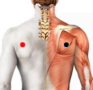

Microbacterium Leprae
escápula - escápula
esófago - duodeno (reservorio)
dorsal 8 - dorsal 8
codo - braquial
triándulo de Scarpa - T. de Scarpa
poplíteo - rodilla
retroplantar - retroplantar

Generalidades:
Lepra por microbacterium leprae , bacteria intracelular y pleomórfica. Es muy agresiva, genera toxinas como la leprosina, va a la piel y la destruye (manchas oscuras, pérdida de sensibilidad, lesiones que no curan, desfiguramiento). La leprosina es capaz de alterar la membrana nuclear de las células y provocar la lesión propia del ADN, causando mutaciones y malignidad en el caso de neoplasias, tumores provocando el cancer verdadero.
También se le conoce como Bacilo de Hansen. La lepra es una enfermedad infecciosa conocida desde los tiempos bíblicos. Esta enfermedad provoca úlceras cutáneas, daño neurológico y debilidad muscular que empeora con el tiempo.
Es muy contagiosa, incluso por pequeñas gotas de saliva por vía aerea. Su periodo de incubación es muy largo, por lo que pasa inadvertida antes que aparezcan los síntomas, lo que dificulta su control.
Transmisión:
Contagiosa, por contacto con secreciones o vía aerea.